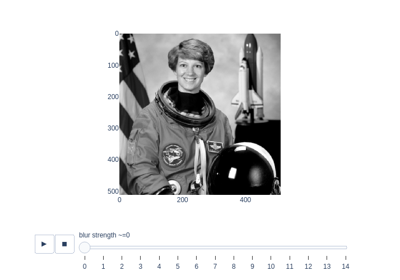

skimage.measure#
Approximate a polygonal chain with the specified tolerance. |
|
Downsample image by applying function func to local blocks. |
|
Compute a metric that indicates the strength of blur in an image (0 for no blur, 1 for maximal blur). |
|
Return the (weighted) centroid of an image. |
|
Calculate the Euler characteristic in binary image. |
|
Find iso-valued contours in a 2D array for a given level value. |
|
Test whether points on a specified grid are inside a polygon. |
|
Compute the inertia tensor of the input image. |
|
Compute the eigenvalues of the inertia tensor of the image. |
|
Fraction of a channel's segmented binary mask that overlaps with a second channel's segmented binary mask. |
|
Label connected regions of an integer array. |
|
Manders' colocalization coefficient between two channels. |
|
Manders' overlap coefficient |
|
Marching cubes algorithm to find surfaces in 3d volumetric data. |
|
Compute surface area, given vertices and triangular faces. |
|
Calculate all raw image moments up to a certain order. |
|
Calculate all central image moments up to a certain order. |
|
Calculate all raw image moments up to a certain order. |
|
Calculate all central image moments up to a certain order. |
|
Calculate Hu's set of image moments (2D-only). |
|
Calculate all normalized central image moments up to a certain order. |
|
Calculate Pearson's Correlation Coefficient between pixel intensities in channels. |
|
Calculate total perimeter of all objects in binary image. |
|
Calculate total Crofton perimeter of all objects in binary image. |
|
Test whether points lie inside a polygon. |
|
Return the intensity profile of an image measured along a scan line. |
|
Fit a model to data with the RANSAC (random sample consensus) algorithm. |
|
Measure properties of labeled image regions. |
|
Compute image properties and return them as a pandas-compatible table. |
|
Calculate the Shannon entropy of an image. |
|
Subdivision of polygonal curves using B-Splines. |
|
Total least squares estimator for 2D circles. |
|
Total least squares estimator for 2D ellipses. |
|
Total least squares estimator for N-dimensional lines. |
- skimage.measure.approximate_polygon(coords, tolerance)[source]#
Approximate a polygonal chain with the specified tolerance.
It is based on the Douglas-Peucker algorithm.
Note that the approximated polygon is always within the convex hull of the original polygon.
- Parameters:
- coords(N, 2) array
Coordinate array.
- tolerancefloat
Maximum distance from original points of polygon to approximated polygonal chain. If tolerance is 0, the original coordinate array is returned.
- Returns:
- coords(M, 2) array
Approximated polygonal chain where M <= N.
References
Approximate and subdivide polygons
Approximate and subdivide polygons
- skimage.measure.block_reduce(image, block_size=2, func=<function sum>, cval=0, func_kwargs=None)[source]#
Downsample image by applying function func to local blocks.
This function is useful for max and mean pooling, for example.
- Parameters:
- imagendarray
N-dimensional input image.
- block_sizearray_like or int
Array containing down-sampling integer factor along each axis. Default block_size is 2.
- funccallable
Function object which is used to calculate the return value for each local block. This function must implement an
axisparameter. Primary functions arenumpy.sum,numpy.min,numpy.max,numpy.meanandnumpy.median. See also func_kwargs.- cvalfloat
Constant padding value if image is not perfectly divisible by the block size.
- func_kwargsdict
Keyword arguments passed to func. Notably useful for passing dtype argument to
np.mean. Takes dictionary of inputs, e.g.:func_kwargs={'dtype': np.float16}).
- Returns:
- imagendarray
Down-sampled image with same number of dimensions as input image.
Examples
>>> from skimage.measure import block_reduce >>> image = np.arange(3*3*4).reshape(3, 3, 4) >>> image array([[[ 0, 1, 2, 3], [ 4, 5, 6, 7], [ 8, 9, 10, 11]], [[12, 13, 14, 15], [16, 17, 18, 19], [20, 21, 22, 23]], [[24, 25, 26, 27], [28, 29, 30, 31], [32, 33, 34, 35]]]) >>> block_reduce(image, block_size=(3, 3, 1), func=np.mean) array([[[16., 17., 18., 19.]]]) >>> image_max1 = block_reduce(image, block_size=(1, 3, 4), func=np.max) >>> image_max1 array([[[11]], [[23]], [[35]]]) >>> image_max2 = block_reduce(image, block_size=(3, 1, 4), func=np.max) >>> image_max2 array([[[27], [31], [35]]])
- skimage.measure.blur_effect(image, h_size=11, channel_axis=None, reduce_func=<function max>)[source]#
Compute a metric that indicates the strength of blur in an image (0 for no blur, 1 for maximal blur).
- Parameters:
- imagendarray
RGB or grayscale nD image. The input image is converted to grayscale before computing the blur metric.
- h_sizeint, optional
Size of the re-blurring filter.
- channel_axisint or None, optional
If None, the image is assumed to be grayscale (single-channel). Otherwise, this parameter indicates which axis of the array corresponds to color channels.
- reduce_funccallable, optional
Function used to calculate the aggregation of blur metrics along all axes. If set to None, the entire list is returned, where the i-th element is the blur metric along the i-th axis.
- Returns:
- blurfloat (0 to 1) or list of floats
Blur metric: by default, the maximum of blur metrics along all axes.
Notes
h_size must keep the same value in order to compare results between images. Most of the time, the default size (11) is enough. This means that the metric can clearly discriminate blur up to an average 11x11 filter; if blur is higher, the metric still gives good results but its values tend towards an asymptote.
References
[1]Frederique Crete, Thierry Dolmiere, Patricia Ladret, and Marina Nicolas “The blur effect: perception and estimation with a new no-reference perceptual blur metric” Proc. SPIE 6492, Human Vision and Electronic Imaging XII, 64920I (2007) https://hal.archives-ouvertes.fr/hal-00232709 DOI:10.1117/12.702790
Estimate strength of blur
- skimage.measure.centroid(image, *, spacing=None)[source]#
Return the (weighted) centroid of an image.
- Parameters:
- imagearray
The input image.
- spacing: tuple of float, shape (ndim, )
The pixel spacing along each axis of the image.
- Returns:
- centertuple of float, length
image.ndim The centroid of the (nonzero) pixels in
image.
- centertuple of float, length
Examples
>>> image = np.zeros((20, 20), dtype=np.float64) >>> image[13:17, 13:17] = 0.5 >>> image[10:12, 10:12] = 1 >>> centroid(image) array([13.16666667, 13.16666667])
Use pixel graphs to find an object’s geodesic center
Use pixel graphs to find an object's geodesic center
- skimage.measure.euler_number(image, connectivity=None)[source]#
Calculate the Euler characteristic in binary image.
For 2D objects, the Euler number is the number of objects minus the number of holes. For 3D objects, the Euler number is obtained as the number of objects plus the number of holes, minus the number of tunnels, or loops.
- Parameters:
- image: (N, M) ndarray or (N, M, D) ndarray.
2D or 3D images. If image is not binary, all values strictly greater than zero are considered as the object.
- connectivityint, optional
Maximum number of orthogonal hops to consider a pixel/voxel as a neighbor. Accepted values are ranging from 1 to input.ndim. If
None, a full connectivity ofinput.ndimis used. 4 or 8 neighborhoods are defined for 2D images (connectivity 1 and 2, respectively). 6 or 26 neighborhoods are defined for 3D images, (connectivity 1 and 3, respectively). Connectivity 2 is not defined.
- Returns:
- euler_numberint
Euler characteristic of the set of all objects in the image.
Notes
The Euler characteristic is an integer number that describes the topology of the set of all objects in the input image. If object is 4-connected, then background is 8-connected, and conversely.
The computation of the Euler characteristic is based on an integral geometry formula in discretized space. In practice, a neighborhood configuration is constructed, and a LUT is applied for each configuration. The coefficients used are the ones of Ohser et al.
It can be useful to compute the Euler characteristic for several connectivities. A large relative difference between results for different connectivities suggests that the image resolution (with respect to the size of objects and holes) is too low.
References
[1]S. Rivollier. Analyse d’image geometrique et morphometrique par diagrammes de forme et voisinages adaptatifs generaux. PhD thesis, 2010. Ecole Nationale Superieure des Mines de Saint-Etienne. https://tel.archives-ouvertes.fr/tel-00560838
[2]Ohser J., Nagel W., Schladitz K. (2002) The Euler Number of Discretized Sets - On the Choice of Adjacency in Homogeneous Lattices. In: Mecke K., Stoyan D. (eds) Morphology of Condensed Matter. Lecture Notes in Physics, vol 600. Springer, Berlin, Heidelberg.
Examples
>>> import numpy as np >>> SAMPLE = np.zeros((100,100,100)); >>> SAMPLE[40:60, 40:60, 40:60]=1 >>> euler_number(SAMPLE) 1... >>> SAMPLE[45:55,45:55,45:55] = 0; >>> euler_number(SAMPLE) 2... >>> SAMPLE = np.array([[0, 0, 0, 0, 0, 0, 0, 0, 0, 1, 0, 1, 1, 0, 0, 0, 0, 0], ... [0, 0, 0, 0, 0, 0, 0, 0, 1, 1, 1, 1, 0, 0, 0, 0, 0, 0], ... [0, 0, 0, 0, 0, 0, 0, 0, 1, 1, 1, 0, 0, 0, 0, 0, 0, 0], ... [0, 0, 0, 0, 0, 0, 0, 0, 1, 1, 1, 0, 0, 0, 0, 0, 0, 0], ... [0, 0, 0, 0, 0, 0, 1, 1, 1, 1, 1, 1, 0, 0, 0, 0, 0, 0], ... [0, 0, 0, 0, 0, 0, 1, 1, 1, 1, 1, 1, 1, 1, 1, 1, 1, 0], ... [0, 0, 0, 0, 0, 0, 1, 1, 1, 1, 1, 1, 1, 1, 1, 1, 1, 0], ... [1, 0, 1, 0, 0, 1, 1, 0, 1, 1, 0, 0, 1, 1, 1, 1, 1, 0], ... [0, 1, 1, 1, 1, 1, 1, 1, 0, 1, 1, 0, 0, 0, 1, 1, 1, 1], ... [0, 1, 1, 0, 0, 1, 1, 1, 0, 0, 0, 0, 0, 0, 0, 0, 1, 1]]) >>> euler_number(SAMPLE) # doctest: 0 >>> euler_number(SAMPLE, connectivity=1) # doctest: 2
Euler number
- skimage.measure.find_contours(image, level=None, fully_connected='low', positive_orientation='low', *, mask=None)[source]#
Find iso-valued contours in a 2D array for a given level value.
Uses the “marching squares” method to compute a the iso-valued contours of the input 2D array for a particular level value. Array values are linearly interpolated to provide better precision for the output contours.
- Parameters:
- image2D ndarray of double
Input image in which to find contours.
- levelfloat, optional
Value along which to find contours in the array. By default, the level is set to (max(image) + min(image)) / 2
Changed in version 0.18: This parameter is now optional.
- fully_connectedstr, {‘low’, ‘high’}
Indicates whether array elements below the given level value are to be considered fully-connected (and hence elements above the value will only be face connected), or vice-versa. (See notes below for details.)
- positive_orientationstr, {‘low’, ‘high’}
Indicates whether the output contours will produce positively-oriented polygons around islands of low- or high-valued elements. If ‘low’ then contours will wind counter- clockwise around elements below the iso-value. Alternately, this means that low-valued elements are always on the left of the contour. (See below for details.)
- mask2D ndarray of bool, or None
A boolean mask, True where we want to draw contours. Note that NaN values are always excluded from the considered region (
maskis set toFalsewhereverarrayisNaN).
- Returns:
- contourslist of (n,2)-ndarrays
Each contour is an ndarray of shape
(n, 2), consisting of n(row, column)coordinates along the contour.
See also
Notes
The marching squares algorithm is a special case of the marching cubes algorithm [1]. A simple explanation is available here:
http://users.polytech.unice.fr/~lingrand/MarchingCubes/algo.html
There is a single ambiguous case in the marching squares algorithm: when a given
2 x 2-element square has two high-valued and two low-valued elements, each pair diagonally adjacent. (Where high- and low-valued is with respect to the contour value sought.) In this case, either the high-valued elements can be ‘connected together’ via a thin isthmus that separates the low-valued elements, or vice-versa. When elements are connected together across a diagonal, they are considered ‘fully connected’ (also known as ‘face+vertex-connected’ or ‘8-connected’). Only high-valued or low-valued elements can be fully-connected, the other set will be considered as ‘face-connected’ or ‘4-connected’. By default, low-valued elements are considered fully-connected; this can be altered with the ‘fully_connected’ parameter.Output contours are not guaranteed to be closed: contours which intersect the array edge or a masked-off region (either where mask is False or where array is NaN) will be left open. All other contours will be closed. (The closed-ness of a contours can be tested by checking whether the beginning point is the same as the end point.)
Contours are oriented. By default, array values lower than the contour value are to the left of the contour and values greater than the contour value are to the right. This means that contours will wind counter-clockwise (i.e. in ‘positive orientation’) around islands of low-valued pixels. This behavior can be altered with the ‘positive_orientation’ parameter.
The order of the contours in the output list is determined by the position of the smallest
x,y(in lexicographical order) coordinate in the contour. This is a side-effect of how the input array is traversed, but can be relied upon.Warning
Array coordinates/values are assumed to refer to the center of the array element. Take a simple example input:
[0, 1]. The interpolated position of 0.5 in this array is midway between the 0-element (atx=0) and the 1-element (atx=1), and thus would fall atx=0.5.This means that to find reasonable contours, it is best to find contours midway between the expected “light” and “dark” values. In particular, given a binarized array, do not choose to find contours at the low or high value of the array. This will often yield degenerate contours, especially around structures that are a single array element wide. Instead choose a middle value, as above.
References
[1]Lorensen, William and Harvey E. Cline. Marching Cubes: A High Resolution 3D Surface Construction Algorithm. Computer Graphics (SIGGRAPH 87 Proceedings) 21(4) July 1987, p. 163-170). DOI:10.1145/37401.37422
Examples
>>> a = np.zeros((3, 3)) >>> a[0, 0] = 1 >>> a array([[1., 0., 0.], [0., 0., 0.], [0., 0., 0.]]) >>> find_contours(a, 0.5) [array([[0. , 0.5], [0.5, 0. ]])]
Contour findingApproximate and subdivide polygons
Approximate and subdivide polygonsMeasure region properties

- skimage.measure.grid_points_in_poly(shape, verts, binarize=True)[source]#
Test whether points on a specified grid are inside a polygon.
For each
(r, c)coordinate on a grid, i.e.(0, 0),(0, 1)etc., test whether that point lies inside a polygon.You can control the output type with the binarize flag. Please refer to its documentation for further details.
- Parameters:
- shapetuple (M, N)
Shape of the grid.
- verts(V, 2) array
Specify the V vertices of the polygon, sorted either clockwise or anti-clockwise. The first point may (but does not need to be) duplicated.
- binarize: bool
If True, the output of the function is a boolean mask. Otherwise, it is a labeled array. The labels are: O - outside, 1 - inside, 2 - vertex, 3 - edge.
- Returns:
- mask(M, N) ndarray
If binarize is True, the output is a boolean mask. True means the corresponding pixel falls inside the polygon. If binarize is False, the output is a labeled array, with pixels having a label between 0 and 3. The meaning of the values is: O - outside, 1 - inside, 2 - vertex, 3 - edge.
See also
- skimage.measure.inertia_tensor(image, mu=None, *, spacing=None)[source]#
Compute the inertia tensor of the input image.
- Parameters:
- imagearray
The input image.
- muarray, optional
The pre-computed central moments of
image. The inertia tensor computation requires the central moments of the image. If an application requires both the central moments and the inertia tensor (for example,skimage.measure.regionprops), then it is more efficient to pre-compute them and pass them to the inertia tensor call.- spacing: tuple of float, shape (ndim, )
The pixel spacing along each axis of the image.
- Returns:
- Tarray, shape
(image.ndim, image.ndim) The inertia tensor of the input image. \(T_{i, j}\) contains the covariance of image intensity along axes \(i\) and \(j\).
- Tarray, shape
References
[2]Bernd Jähne. Spatio-Temporal Image Processing: Theory and Scientific Applications. (Chapter 8: Tensor Methods) Springer, 1993.
- skimage.measure.inertia_tensor_eigvals(image, mu=None, T=None, *, spacing=None)[source]#
Compute the eigenvalues of the inertia tensor of the image.
The inertia tensor measures covariance of the image intensity along the image axes. (See
inertia_tensor.) The relative magnitude of the eigenvalues of the tensor is thus a measure of the elongation of a (bright) object in the image.- Parameters:
- imagearray
The input image.
- muarray, optional
The pre-computed central moments of
image.- Tarray, shape
(image.ndim, image.ndim) The pre-computed inertia tensor. If
Tis given,muandimageare ignored.- spacing: tuple of float, shape (ndim, )
The pixel spacing along each axis of the image.
- Returns:
- eigvalslist of float, length
image.ndim The eigenvalues of the inertia tensor of
image, in descending order.
- eigvalslist of float, length
Notes
Computing the eigenvalues requires the inertia tensor of the input image. This is much faster if the central moments (
mu) are provided, or, alternatively, one can provide the inertia tensor (T) directly.
- skimage.measure.intersection_coeff(image0_mask, image1_mask, mask=None)[source]#
Fraction of a channel’s segmented binary mask that overlaps with a second channel’s segmented binary mask.
- Parameters:
- image0_mask(M, N) ndarray of dtype bool
Image mask of channel A.
- image1_mask(M, N) ndarray of dtype bool
Image mask of channel B. Must have same dimensions as image0_mask.
- mask(M, N) ndarray of dtype bool, optional
Only image0_mask and image1_mask pixels within this region of interest mask are included in the calculation. Must have same dimensions as image0_mask.
- Returns:
- Intersection coefficient, float
Fraction of image0_mask that overlaps with image1_mask.
Colocalization metrics
- skimage.measure.label(label_image, background=None, return_num=False, connectivity=None)[source]#
Label connected regions of an integer array.
Two pixels are connected when they are neighbors and have the same value. In 2D, they can be neighbors either in a 1- or 2-connected sense. The value refers to the maximum number of orthogonal hops to consider a pixel/voxel a neighbor:
1-connectivity 2-connectivity diagonal connection close-up [ ] [ ] [ ] [ ] [ ] | \ | / | <- hop 2 [ ]--[x]--[ ] [ ]--[x]--[ ] [x]--[ ] | / | \ hop 1 [ ] [ ] [ ] [ ]
- Parameters:
- label_imagendarray of dtype int
Image to label.
- backgroundint, optional
Consider all pixels with this value as background pixels, and label them as 0. By default, 0-valued pixels are considered as background pixels.
- return_numbool, optional
Whether to return the number of assigned labels.
- connectivityint, optional
Maximum number of orthogonal hops to consider a pixel/voxel as a neighbor. Accepted values are ranging from 1 to input.ndim. If
None, a full connectivity ofinput.ndimis used.
- Returns:
- labelsndarray of dtype int
Labeled array, where all connected regions are assigned the same integer value.
- numint, optional
Number of labels, which equals the maximum label index and is only returned if return_num is True.
See also
References
[1]Christophe Fiorio and Jens Gustedt, “Two linear time Union-Find strategies for image processing”, Theoretical Computer Science 154 (1996), pp. 165-181.
[2]Kensheng Wu, Ekow Otoo and Arie Shoshani, “Optimizing connected component labeling algorithms”, Paper LBNL-56864, 2005, Lawrence Berkeley National Laboratory (University of California), http://repositories.cdlib.org/lbnl/LBNL-56864
Examples
>>> import numpy as np >>> x = np.eye(3).astype(int) >>> print(x) [[1 0 0] [0 1 0] [0 0 1]] >>> print(label(x, connectivity=1)) [[1 0 0] [0 2 0] [0 0 3]] >>> print(label(x, connectivity=2)) [[1 0 0] [0 1 0] [0 0 1]] >>> print(label(x, background=-1)) [[1 2 2] [2 1 2] [2 2 1]] >>> x = np.array([[1, 0, 0], ... [1, 1, 5], ... [0, 0, 0]]) >>> print(label(x)) [[1 0 0] [1 1 2] [0 0 0]]
Find the intersection of two segmentations
Find the intersection of two segmentationsExtrema
Explore and visualize region properties with pandas
Explore and visualize region properties with pandasMeasure region propertiesEuler numberSegment human cells (in mitosis)
Segment human cells (in mitosis)


- skimage.measure.manders_coloc_coeff(image0, image1_mask, mask=None)[source]#
Manders’ colocalization coefficient between two channels.
- Parameters:
- image0(M, N) ndarray
Image of channel A. All pixel values should be non-negative.
- image1_mask(M, N) ndarray of dtype bool
Binary mask with segmented regions of interest in channel B. Must have same dimensions as image0.
- mask(M, N) ndarray of dtype bool, optional
Only image0 pixel values within this region of interest mask are included in the calculation. Must have same dimensions as image0.
- Returns:
- mccfloat
Manders’ colocalization coefficient.
Notes
Manders’ Colocalization Coefficient (MCC) is the fraction of total intensity of a certain channel (channel A) that is within the segmented region of a second channel (channel B) [1]. It ranges from 0 for no colocalisation to 1 for complete colocalization. It is also referred to as M1 and M2.
MCC is commonly used to measure the colocalization of a particular protein in a subceullar compartment. Typically a segmentation mask for channel B is generated by setting a threshold that the pixel values must be above to be included in the MCC calculation. In this implementation, the channel B mask is provided as the argument image1_mask, allowing the exact segmentation method to be decided by the user beforehand.
The implemented equation is:
\[r = \frac{\sum A_{i,coloc}}{\sum A_i}\]- where
\(A_i\) is the value of the \(i^{th}\) pixel in image0 \(A_{i,coloc} = A_i\) if \(Bmask_i > 0\) \(Bmask_i\) is the value of the \(i^{th}\) pixel in mask
MCC is sensitive to noise, with diffuse signal in the first channel inflating its value. Images should be processed to remove out of focus and background light before the MCC is calculated [2].
References
[1]Manders, E.M.M., Verbeek, F.J. and Aten, J.A. (1993), Measurement of co-localization of objects in dual-colour confocal images. Journal of Microscopy, 169: 375-382. https://doi.org/10.1111/j.1365-2818.1993.tb03313.x https://imagej.net/media/manders.pdf
[2]Dunn, K. W., Kamocka, M. M., & McDonald, J. H. (2011). A practical guide to evaluating colocalization in biological microscopy. American journal of physiology. Cell physiology, 300(4), C723–C742. https://doi.org/10.1152/ajpcell.00462.2010
Colocalization metrics
- skimage.measure.manders_overlap_coeff(image0, image1, mask=None)[source]#
Manders’ overlap coefficient
- Parameters:
- image0(M, N) ndarray
Image of channel A. All pixel values should be non-negative.
- image1(M, N) ndarray
Image of channel B. All pixel values should be non-negative. Must have same dimensions as image0
- mask(M, N) ndarray of dtype bool, optional
Only image0 and image1 pixel values within this region of interest mask are included in the calculation. Must have ♣same dimensions as image0.
- Returns:
- moc: float
Manders’ Overlap Coefficient of pixel intensities between the two images.
Notes
Manders’ Overlap Coefficient (MOC) is given by the equation [1]:
\[r = \frac{\sum A_i B_i}{\sqrt{\sum A_i^2 \sum B_i^2}}\]- where
\(A_i\) is the value of the \(i^{th}\) pixel in image0 \(B_i\) is the value of the \(i^{th}\) pixel in image1
It ranges between 0 for no colocalization and 1 for complete colocalization of all pixels.
MOC does not take into account pixel intensities, just the fraction of pixels that have positive values for both channels[R2208c1a5d6e1-2]_ [3]. Its usefulness has been criticized as it changes in response to differences in both co-occurence and correlation and so a particular MOC value could indicate a wide range of colocalization patterns [4] [5].
References
[1]Manders, E.M.M., Verbeek, F.J. and Aten, J.A. (1993), Measurement of co-localization of objects in dual-colour confocal images. Journal of Microscopy, 169: 375-382. https://doi.org/10.1111/j.1365-2818.1993.tb03313.x https://imagej.net/media/manders.pdf
[2]Dunn, K. W., Kamocka, M. M., & McDonald, J. H. (2011). A practical guide to evaluating colocalization in biological microscopy. American journal of physiology. Cell physiology, 300(4), C723–C742. https://doi.org/10.1152/ajpcell.00462.2010
[3]Bolte, S. and Cordelières, F.P. (2006), A guided tour into subcellular colocalization analysis in light microscopy. Journal of Microscopy, 224: 213-232. https://doi.org/10.1111/j.1365-2818.2006.01
[4]Adler J, Parmryd I. (2010), Quantifying colocalization by correlation: the Pearson correlation coefficient is superior to the Mander’s overlap coefficient. Cytometry A. Aug;77(8):733-42.https://doi.org/10.1002/cyto.a.20896
[5]Adler, J, Parmryd, I. Quantifying colocalization: The case for discarding the Manders overlap coefficient. Cytometry. 2021; 99: 910– 920. https://doi.org/10.1002/cyto.a.24336
- skimage.measure.marching_cubes(volume, level=None, *, spacing=(1.0, 1.0, 1.0), gradient_direction='descent', step_size=1, allow_degenerate=True, method='lewiner', mask=None)[source]#
Marching cubes algorithm to find surfaces in 3d volumetric data.
In contrast with Lorensen et al. approach [2], Lewiner et al. algorithm is faster, resolves ambiguities, and guarantees topologically correct results. Therefore, this algorithm generally a better choice.
- Parameters:
- volume(M, N, P) array
Input data volume to find isosurfaces. Will internally be converted to float32 if necessary.
- levelfloat, optional
Contour value to search for isosurfaces in volume. If not given or None, the average of the min and max of vol is used.
- spacinglength-3 tuple of floats, optional
Voxel spacing in spatial dimensions corresponding to numpy array indexing dimensions (M, N, P) as in volume.
- gradient_directionstring, optional
Controls if the mesh was generated from an isosurface with gradient descent toward objects of interest (the default), or the opposite, considering the left-hand rule. The two options are: * descent : Object was greater than exterior * ascent : Exterior was greater than object
- step_sizeint, optional
Step size in voxels. Default 1. Larger steps yield faster but coarser results. The result will always be topologically correct though.
- allow_degeneratebool, optional
Whether to allow degenerate (i.e. zero-area) triangles in the end-result. Default True. If False, degenerate triangles are removed, at the cost of making the algorithm slower.
- method: {‘lewiner’, ‘lorensen’}, optional
Whether the method of Lewiner et al. or Lorensen et al. will be used.
- mask(M, N, P) array, optional
Boolean array. The marching cube algorithm will be computed only on True elements. This will save computational time when interfaces are located within certain region of the volume M, N, P-e.g. the top half of the cube-and also allow to compute finite surfaces-i.e. open surfaces that do not end at the border of the cube.
- Returns:
- verts(V, 3) array
Spatial coordinates for V unique mesh vertices. Coordinate order matches input volume (M, N, P). If
allow_degenerateis set to True, then the presence of degenerate triangles in the mesh can make this array have duplicate vertices.- faces(F, 3) array
Define triangular faces via referencing vertex indices from
verts. This algorithm specifically outputs triangles, so each face has exactly three indices.- normals(V, 3) array
The normal direction at each vertex, as calculated from the data.
- values(V, ) array
Gives a measure for the maximum value of the data in the local region near each vertex. This can be used by visualization tools to apply a colormap to the mesh.
Notes
The algorithm [1] is an improved version of Chernyaev’s Marching Cubes 33 algorithm. It is an efficient algorithm that relies on heavy use of lookup tables to handle the many different cases, keeping the algorithm relatively easy. This implementation is written in Cython, ported from Lewiner’s C++ implementation.
To quantify the area of an isosurface generated by this algorithm, pass verts and faces to
skimage.measure.mesh_surface_area.Regarding visualization of algorithm output, to contour a volume named myvolume about the level 0.0, using the
mayavipackage:>>> >> from mayavi import mlab >> verts, faces, _, _ = marching_cubes(myvolume, 0.0) >> mlab.triangular_mesh([vert[0] for vert in verts], [vert[1] for vert in verts], [vert[2] for vert in verts], faces) >> mlab.show()
Similarly using the
visvispackage:>>> >> import visvis as vv >> verts, faces, normals, values = marching_cubes(myvolume, 0.0) >> vv.mesh(np.fliplr(verts), faces, normals, values) >> vv.use().Run()
To reduce the number of triangles in the mesh for better performance, see this example using the
mayavipackage.References
[1]Thomas Lewiner, Helio Lopes, Antonio Wilson Vieira and Geovan Tavares. Efficient implementation of Marching Cubes’ cases with topological guarantees. Journal of Graphics Tools 8(2) pp. 1-15 (december 2003). DOI:10.1080/10867651.2003.10487582
[2]Lorensen, William and Harvey E. Cline. Marching Cubes: A High Resolution 3D Surface Construction Algorithm. Computer Graphics (SIGGRAPH 87 Proceedings) 21(4) July 1987, p. 163-170). DOI:10.1145/37401.37422
Marching Cubes
- skimage.measure.mesh_surface_area(verts, faces)[source]#
Compute surface area, given vertices and triangular faces.
- Parameters:
- verts(V, 3) array of floats
Array containing (x, y, z) coordinates for V unique mesh vertices.
- faces(F, 3) array of ints
List of length-3 lists of integers, referencing vertex coordinates as provided in verts.
- Returns:
- areafloat
Surface area of mesh. Units now [coordinate units] ** 2.
See also
Notes
The arguments expected by this function are the first two outputs from
skimage.measure.marching_cubes. For unit correct output, ensure correct spacing was passed toskimage.measure.marching_cubes.This algorithm works properly only if the
facesprovided are all triangles.
- skimage.measure.moments(image, order=3, *, spacing=None)[source]#
Calculate all raw image moments up to a certain order.
- The following properties can be calculated from raw image moments:
Area as:
M[0, 0].Centroid as: {
M[1, 0] / M[0, 0],M[0, 1] / M[0, 0]}.
Note that raw moments are neither translation, scale nor rotation invariant.
- Parameters:
- imagenD double or uint8 array
Rasterized shape as image.
- orderint, optional
Maximum order of moments. Default is 3.
- spacing: tuple of float, shape (ndim, )
The pixel spacing along each axis of the image.
- Returns:
- m(
order + 1,order + 1) array Raw image moments.
- m(
References
[1]Wilhelm Burger, Mark Burge. Principles of Digital Image Processing: Core Algorithms. Springer-Verlag, London, 2009.
[2]B. Jähne. Digital Image Processing. Springer-Verlag, Berlin-Heidelberg, 6. edition, 2005.
[3]T. H. Reiss. Recognizing Planar Objects Using Invariant Image Features, from Lecture notes in computer science, p. 676. Springer, Berlin, 1993.
Examples
>>> image = np.zeros((20, 20), dtype=np.float64) >>> image[13:17, 13:17] = 1 >>> M = moments(image) >>> centroid = (M[1, 0] / M[0, 0], M[0, 1] / M[0, 0]) >>> centroid (14.5, 14.5)
- skimage.measure.moments_central(image, center=None, order=3, *, spacing=None, **kwargs)[source]#
Calculate all central image moments up to a certain order.
The center coordinates (cr, cc) can be calculated from the raw moments as: {
M[1, 0] / M[0, 0],M[0, 1] / M[0, 0]}.Note that central moments are translation invariant but not scale and rotation invariant.
- Parameters:
- imagenD double or uint8 array
Rasterized shape as image.
- centertuple of float, optional
Coordinates of the image centroid. This will be computed if it is not provided.
- orderint, optional
The maximum order of moments computed.
- spacing: tuple of float, shape (ndim, )
The pixel spacing along each axis of the image.
- Returns:
- mu(
order + 1,order + 1) array Central image moments.
- mu(
References
[1]Wilhelm Burger, Mark Burge. Principles of Digital Image Processing: Core Algorithms. Springer-Verlag, London, 2009.
[2]B. Jähne. Digital Image Processing. Springer-Verlag, Berlin-Heidelberg, 6. edition, 2005.
[3]T. H. Reiss. Recognizing Planar Objects Using Invariant Image Features, from Lecture notes in computer science, p. 676. Springer, Berlin, 1993.
Examples
>>> image = np.zeros((20, 20), dtype=np.float64) >>> image[13:17, 13:17] = 1 >>> M = moments(image) >>> centroid = (M[1, 0] / M[0, 0], M[0, 1] / M[0, 0]) >>> moments_central(image, centroid) array([[16., 0., 20., 0.], [ 0., 0., 0., 0.], [20., 0., 25., 0.], [ 0., 0., 0., 0.]])
- skimage.measure.moments_coords(coords, order=3)[source]#
Calculate all raw image moments up to a certain order.
- The following properties can be calculated from raw image moments:
Area as:
M[0, 0].Centroid as: {
M[1, 0] / M[0, 0],M[0, 1] / M[0, 0]}.
Note that raw moments are neither translation, scale nor rotation invariant.
- Parameters:
- coords(N, D) double or uint8 array
Array of N points that describe an image of D dimensionality in Cartesian space.
- orderint, optional
Maximum order of moments. Default is 3.
- Returns:
- M(
order + 1,order + 1, …) array Raw image moments. (D dimensions)
- M(
References
[1]Johannes Kilian. Simple Image Analysis By Moments. Durham University, version 0.2, Durham, 2001.
Examples
>>> coords = np.array([[row, col] ... for row in range(13, 17) ... for col in range(14, 18)], dtype=np.float64) >>> M = moments_coords(coords) >>> centroid = (M[1, 0] / M[0, 0], M[0, 1] / M[0, 0]) >>> centroid (14.5, 15.5)
- skimage.measure.moments_coords_central(coords, center=None, order=3)[source]#
Calculate all central image moments up to a certain order.
- The following properties can be calculated from raw image moments:
Area as:
M[0, 0].Centroid as: {
M[1, 0] / M[0, 0],M[0, 1] / M[0, 0]}.
Note that raw moments are neither translation, scale nor rotation invariant.
- Parameters:
- coords(N, D) double or uint8 array
Array of N points that describe an image of D dimensionality in Cartesian space. A tuple of coordinates as returned by
np.nonzerois also accepted as input.- centertuple of float, optional
Coordinates of the image centroid. This will be computed if it is not provided.
- orderint, optional
Maximum order of moments. Default is 3.
- Returns:
- Mc(
order + 1,order + 1, …) array Central image moments. (D dimensions)
- Mc(
References
[1]Johannes Kilian. Simple Image Analysis By Moments. Durham University, version 0.2, Durham, 2001.
Examples
>>> coords = np.array([[row, col] ... for row in range(13, 17) ... for col in range(14, 18)]) >>> moments_coords_central(coords) array([[16., 0., 20., 0.], [ 0., 0., 0., 0.], [20., 0., 25., 0.], [ 0., 0., 0., 0.]])
As seen above, for symmetric objects, odd-order moments (columns 1 and 3, rows 1 and 3) are zero when centered on the centroid, or center of mass, of the object (the default). If we break the symmetry by adding a new point, this no longer holds:
>>> coords2 = np.concatenate((coords, [[17, 17]]), axis=0) >>> np.round(moments_coords_central(coords2), ... decimals=2) array([[17. , 0. , 22.12, -2.49], [ 0. , 3.53, 1.73, 7.4 ], [25.88, 6.02, 36.63, 8.83], [ 4.15, 19.17, 14.8 , 39.6 ]])
Image moments and central image moments are equivalent (by definition) when the center is (0, 0):
>>> np.allclose(moments_coords(coords), ... moments_coords_central(coords, (0, 0))) True
- skimage.measure.moments_hu(nu)[source]#
Calculate Hu’s set of image moments (2D-only).
Note that this set of moments is proved to be translation, scale and rotation invariant.
- Parameters:
- nu(M, M) array
Normalized central image moments, where M must be >= 4.
- Returns:
- nu(7,) array
Hu’s set of image moments.
References
[1]M. K. Hu, “Visual Pattern Recognition by Moment Invariants”, IRE Trans. Info. Theory, vol. IT-8, pp. 179-187, 1962
[2]Wilhelm Burger, Mark Burge. Principles of Digital Image Processing: Core Algorithms. Springer-Verlag, London, 2009.
[3]B. Jähne. Digital Image Processing. Springer-Verlag, Berlin-Heidelberg, 6. edition, 2005.
[4]T. H. Reiss. Recognizing Planar Objects Using Invariant Image Features, from Lecture notes in computer science, p. 676. Springer, Berlin, 1993.
Examples
>>> image = np.zeros((20, 20), dtype=np.float64) >>> image[13:17, 13:17] = 0.5 >>> image[10:12, 10:12] = 1 >>> mu = moments_central(image) >>> nu = moments_normalized(mu) >>> moments_hu(nu) array([0.74537037, 0.35116598, 0.10404918, 0.04064421, 0.00264312, 0.02408546, 0. ])
- skimage.measure.moments_normalized(mu, order=3, spacing=None)[source]#
Calculate all normalized central image moments up to a certain order.
Note that normalized central moments are translation and scale invariant but not rotation invariant.
- Parameters:
- mu(M,[ …,] M) array
Central image moments, where M must be greater than or equal to
order.- orderint, optional
Maximum order of moments. Default is 3.
- Returns:
- nu(
order + 1,[ …,]order + 1) array Normalized central image moments.
- nu(
References
[1]Wilhelm Burger, Mark Burge. Principles of Digital Image Processing: Core Algorithms. Springer-Verlag, London, 2009.
[2]B. Jähne. Digital Image Processing. Springer-Verlag, Berlin-Heidelberg, 6. edition, 2005.
[3]T. H. Reiss. Recognizing Planar Objects Using Invariant Image Features, from Lecture notes in computer science, p. 676. Springer, Berlin, 1993.
Examples
>>> image = np.zeros((20, 20), dtype=np.float64) >>> image[13:17, 13:17] = 1 >>> m = moments(image) >>> centroid = (m[0, 1] / m[0, 0], m[1, 0] / m[0, 0]) >>> mu = moments_central(image, centroid) >>> moments_normalized(mu) array([[ nan, nan, 0.078125 , 0. ], [ nan, 0. , 0. , 0. ], [0.078125 , 0. , 0.00610352, 0. ], [0. , 0. , 0. , 0. ]])
- skimage.measure.pearson_corr_coeff(image0, image1, mask=None)[source]#
Calculate Pearson’s Correlation Coefficient between pixel intensities in channels.
- Parameters:
- image0(M, N) ndarray
Image of channel A.
- image1(M, N) ndarray
Image of channel 2 to be correlated with channel B. Must have same dimensions as image0.
- mask(M, N) ndarray of dtype bool, optional
Only image0 and image1 pixels within this region of interest mask are included in the calculation. Must have same dimensions as image0.
- Returns:
- pccfloat
Pearson’s correlation coefficient of the pixel intensities between the two images, within the mask if provided.
- p-valuefloat
Two-tailed p-value.
Notes
Pearson’s Correlation Coefficient (PCC) measures the linear correlation between the pixel intensities of the two images. Its value ranges from -1 for perfect linear anti-correlation to +1 for perfect linear correlation. The calculation of the p-value assumes that the intensities of pixels in each input image are normally distributed.
Scipy’s implementation of Pearson’s correlation coefficient is used. Please refer to it for further information and caveats [1].
\[r = \frac{\sum (A_i - m_A_i) (B_i - m_B_i)} {\sqrt{\sum (A_i - m_A_i)^2 \sum (B_i - m_B_i)^2}}\]- where
\(A_i\) is the value of the \(i^{th}\) pixel in image0 \(B_i\) is the value of the \(i^{th}\) pixel in image1, \(m_A_i\) is the mean of the pixel values in image0 \(m_B_i\) is the mean of the pixel values in image1
A low PCC value does not necessarily mean that there is no correlation between the two channel intensities, just that there is no linear correlation. You may wish to plot the pixel intensities of each of the two channels in a 2D scatterplot and use Spearman’s rank correlation if a non-linear correlation is visually identified [2]. Also consider if you are interested in correlation or co-occurence, in which case a method involving segmentation masks (e.g. MCC or intersection coefficient) may be more suitable [3] [4].
Providing the mask of only relevant sections of the image (e.g., cells, or particular cellular compartments) and removing noise is important as the PCC is sensitive to these measures [3] [4].
References
[3] (1,2)Dunn, K. W., Kamocka, M. M., & McDonald, J. H. (2011). A practical guide to evaluating colocalization in biological microscopy. American journal of physiology. Cell physiology, 300(4), C723–C742. https://doi.org/10.1152/ajpcell.00462.2010
[4] (1,2)Bolte, S. and Cordelières, F.P. (2006), A guided tour into subcellular colocalization analysis in light microscopy. Journal of Microscopy, 224: 213-232. https://doi.org/10.1111/j.1365-2818.2006.01706.x
Colocalization metrics
- skimage.measure.perimeter(image, neighborhood=4)[source]#
Calculate total perimeter of all objects in binary image.
- Parameters:
- image(N, M) ndarray
2D binary image.
- neighborhood4 or 8, optional
Neighborhood connectivity for border pixel determination. It is used to compute the contour. A higher neighborhood widens the border on which the perimeter is computed.
- Returns:
- perimeterfloat
Total perimeter of all objects in binary image.
References
[1]K. Benkrid, D. Crookes. Design and FPGA Implementation of a Perimeter Estimator. The Queen’s University of Belfast. http://www.cs.qub.ac.uk/~d.crookes/webpubs/papers/perimeter.doc
Examples
>>> from skimage import data, util >>> from skimage.measure import label >>> # coins image (binary) >>> img_coins = data.coins() > 110 >>> # total perimeter of all objects in the image >>> perimeter(img_coins, neighborhood=4) 7796.867... >>> perimeter(img_coins, neighborhood=8) 8806.268...

- skimage.measure.perimeter_crofton(image, directions=4)[source]#
Calculate total Crofton perimeter of all objects in binary image.
- Parameters:
- image(N, M) ndarray
2D image. If image is not binary, all values strictly greater than zero are considered as the object.
- directions2 or 4, optional
Number of directions used to approximate the Crofton perimeter. By default, 4 is used: it should be more accurate than 2. Computation time is the same in both cases.
- Returns:
- perimeterfloat
Total perimeter of all objects in binary image.
Notes
This measure is based on Crofton formula [1], which is a measure from integral geometry. It is defined for general curve length evaluation via a double integral along all directions. In a discrete space, 2 or 4 directions give a quite good approximation, 4 being more accurate than 2 for more complex shapes.
Similar to
perimeter(), this function returns an approximation of the perimeter in continuous space.References
[2]S. Rivollier. Analyse d’image geometrique et morphometrique par diagrammes de forme et voisinages adaptatifs generaux. PhD thesis, 2010. Ecole Nationale Superieure des Mines de Saint-Etienne. https://tel.archives-ouvertes.fr/tel-00560838
Examples
>>> from skimage import data, util >>> from skimage.measure import label >>> # coins image (binary) >>> img_coins = data.coins() > 110 >>> # total perimeter of all objects in the image >>> perimeter_crofton(img_coins, directions=2) 8144.578... >>> perimeter_crofton(img_coins, directions=4) 7837.077...
- skimage.measure.points_in_poly(points, verts)[source]#
Test whether points lie inside a polygon.
- Parameters:
- points(N, 2) array
Input points,
(x, y).- verts(M, 2) array
Vertices of the polygon, sorted either clockwise or anti-clockwise. The first point may (but does not need to be) duplicated.
- Returns:
- mask(N,) array of bool
True if corresponding point is inside the polygon.
See also
- skimage.measure.profile_line(image, src, dst, linewidth=1, order=None, mode='reflect', cval=0.0, *, reduce_func=<function mean>)[source]#
Return the intensity profile of an image measured along a scan line.
- Parameters:
- imagendarray, shape (M, N[, C])
The image, either grayscale (2D array) or multichannel (3D array, where the final axis contains the channel information).
- srcarray_like, shape (2, )
The coordinates of the start point of the scan line.
- dstarray_like, shape (2, )
The coordinates of the end point of the scan line. The destination point is included in the profile, in contrast to standard numpy indexing.
- linewidthint, optional
Width of the scan, perpendicular to the line
- orderint in {0, 1, 2, 3, 4, 5}, optional
The order of the spline interpolation, default is 0 if image.dtype is bool and 1 otherwise. The order has to be in the range 0-5. See
skimage.transform.warpfor detail.- mode{‘constant’, ‘nearest’, ‘reflect’, ‘mirror’, ‘wrap’}, optional
How to compute any values falling outside of the image.
- cvalfloat, optional
If mode is ‘constant’, what constant value to use outside the image.
- reduce_funccallable, optional
Function used to calculate the aggregation of pixel values perpendicular to the profile_line direction when linewidth > 1. If set to None the unreduced array will be returned.
- Returns:
- return_valuearray
The intensity profile along the scan line. The length of the profile is the ceil of the computed length of the scan line.
Examples
>>> x = np.array([[1, 1, 1, 2, 2, 2]]) >>> img = np.vstack([np.zeros_like(x), x, x, x, np.zeros_like(x)]) >>> img array([[0, 0, 0, 0, 0, 0], [1, 1, 1, 2, 2, 2], [1, 1, 1, 2, 2, 2], [1, 1, 1, 2, 2, 2], [0, 0, 0, 0, 0, 0]]) >>> profile_line(img, (2, 1), (2, 4)) array([1., 1., 2., 2.]) >>> profile_line(img, (1, 0), (1, 6), cval=4) array([1., 1., 1., 2., 2., 2., 2.])
The destination point is included in the profile, in contrast to standard numpy indexing. For example:
>>> profile_line(img, (1, 0), (1, 6)) # The final point is out of bounds array([1., 1., 1., 2., 2., 2., 2.]) >>> profile_line(img, (1, 0), (1, 5)) # This accesses the full first row array([1., 1., 1., 2., 2., 2.])
For different reduce_func inputs:
>>> profile_line(img, (1, 0), (1, 3), linewidth=3, reduce_func=np.mean) array([0.66666667, 0.66666667, 0.66666667, 1.33333333]) >>> profile_line(img, (1, 0), (1, 3), linewidth=3, reduce_func=np.max) array([1, 1, 1, 2]) >>> profile_line(img, (1, 0), (1, 3), linewidth=3, reduce_func=np.sum) array([2, 2, 2, 4])
The unreduced array will be returned when reduce_func is None or when reduce_func acts on each pixel value individually.
>>> profile_line(img, (1, 2), (4, 2), linewidth=3, order=0, ... reduce_func=None) array([[1, 1, 2], [1, 1, 2], [1, 1, 2], [0, 0, 0]]) >>> profile_line(img, (1, 0), (1, 3), linewidth=3, reduce_func=np.sqrt) array([[1. , 1. , 0. ], [1. , 1. , 0. ], [1. , 1. , 0. ], [1.41421356, 1.41421356, 0. ]])
- skimage.measure.ransac(data, model_class, min_samples, residual_threshold, is_data_valid=None, is_model_valid=None, max_trials=100, stop_sample_num=inf, stop_residuals_sum=0, stop_probability=1, rng=None, initial_inliers=None)[source]#
Fit a model to data with the RANSAC (random sample consensus) algorithm.
RANSAC is an iterative algorithm for the robust estimation of parameters from a subset of inliers from the complete data set. Each iteration performs the following tasks:
Select min_samples random samples from the original data and check whether the set of data is valid (see is_data_valid).
Estimate a model to the random subset (model_cls.estimate(*data[random_subset]) and check whether the estimated model is valid (see is_model_valid).
Classify all data as inliers or outliers by calculating the residuals to the estimated model (model_cls.residuals(*data)) - all data samples with residuals smaller than the residual_threshold are considered as inliers.
Save estimated model as best model if number of inlier samples is maximal. In case the current estimated model has the same number of inliers, it is only considered as the best model if it has less sum of residuals.
These steps are performed either a maximum number of times or until one of the special stop criteria are met. The final model is estimated using all inlier samples of the previously determined best model.
- Parameters:
- data[list, tuple of] (N, …) array
Data set to which the model is fitted, where N is the number of data points and the remaining dimension are depending on model requirements. If the model class requires multiple input data arrays (e.g. source and destination coordinates of
skimage.transform.AffineTransform), they can be optionally passed as tuple or list. Note, that in this case the functionsestimate(*data),residuals(*data),is_model_valid(model, *random_data)andis_data_valid(*random_data)must all take each data array as separate arguments.- model_classobject
Object with the following object methods:
success = estimate(*data)residuals(*data)
where success indicates whether the model estimation succeeded (True or None for success, False for failure).
- min_samplesint in range (0, N)
The minimum number of data points to fit a model to.
- residual_thresholdfloat larger than 0
Maximum distance for a data point to be classified as an inlier.
- is_data_validfunction, optional
This function is called with the randomly selected data before the model is fitted to it: is_data_valid(*random_data).
- is_model_validfunction, optional
This function is called with the estimated model and the randomly selected data: is_model_valid(model, *random_data), .
- max_trialsint, optional
Maximum number of iterations for random sample selection.
- stop_sample_numint, optional
Stop iteration if at least this number of inliers are found.
- stop_residuals_sumfloat, optional
Stop iteration if sum of residuals is less than or equal to this threshold.
- stop_probabilityfloat in range [0, 1], optional
RANSAC iteration stops if at least one outlier-free set of the training data is sampled with
probability >= stop_probability, depending on the current best model’s inlier ratio and the number of trials. This requires to generate at least N samples (trials):N >= log(1 - probability) / log(1 - e**m)
where the probability (confidence) is typically set to a high value such as 0.99, e is the current fraction of inliers w.r.t. the total number of samples, and m is the min_samples value.
- rng{
numpy.random.Generator, int}, optional Pseudo-random number generator. By default, a PCG64 generator is used (see
numpy.random.default_rng()). If rng is an int, it is used to seed the generator.- initial_inliersarray-like of bool, shape (N,), optional
Initial samples selection for model estimation
- Returns:
- modelobject
Best model with largest consensus set.
- inliers(N, ) array
Boolean mask of inliers classified as
True.
- Other Parameters:
- random_stateDEPRECATED
Deprecated in favor of rng.
Deprecated since version 0.21.
References
[1]“RANSAC”, Wikipedia, https://en.wikipedia.org/wiki/RANSAC
Examples
Generate ellipse data without tilt and add noise:
>>> t = np.linspace(0, 2 * np.pi, 50) >>> xc, yc = 20, 30 >>> a, b = 5, 10 >>> x = xc + a * np.cos(t) >>> y = yc + b * np.sin(t) >>> data = np.column_stack([x, y]) >>> rng = np.random.default_rng(203560) # do not copy this value >>> data += rng.normal(size=data.shape)
Add some faulty data:
>>> data[0] = (100, 100) >>> data[1] = (110, 120) >>> data[2] = (120, 130) >>> data[3] = (140, 130)
Estimate ellipse model using all available data:
>>> model = EllipseModel() >>> model.estimate(data) True >>> np.round(model.params) array([ 72., 75., 77., 14., 1.])
Estimate ellipse model using RANSAC:
>>> ransac_model, inliers = ransac(data, EllipseModel, 20, 3, max_trials=50) >>> abs(np.round(ransac_model.params)) array([20., 30., 10., 6., 2.]) >>> inliers array([False, False, False, False, True, True, True, True, True, True, True, True, True, True, True, True, True, True, True, True, True, True, True, True, True, True, True, True, True, True, True, True, True, True, True, True, True, True, True, True, True, True, True, True, True, True, True, True, True, True], dtype=bool) >>> sum(inliers) > 40 True
RANSAC can be used to robustly estimate a geometric transformation. In this section, we also show how to use a proportion of the total samples, rather than an absolute number.
>>> from skimage.transform import SimilarityTransform >>> rng = np.random.default_rng() >>> src = 100 * rng.random((50, 2)) >>> model0 = SimilarityTransform(scale=0.5, rotation=1, ... translation=(10, 20)) >>> dst = model0(src) >>> dst[0] = (10000, 10000) >>> dst[1] = (-100, 100) >>> dst[2] = (50, 50) >>> ratio = 0.5 # use half of the samples >>> min_samples = int(ratio * len(src)) >>> model, inliers = ransac( ... (src, dst), ... SimilarityTransform, ... min_samples, ... 10, ... initial_inliers=np.ones(len(src), dtype=bool), ... ) >>> inliers array([False, False, False, True, True, True, True, True, True, True, True, True, True, True, True, True, True, True, True, True, True, True, True, True, True, True, True, True, True, True, True, True, True, True, True, True, True, True, True, True, True, True, True, True, True, True, True, True, True, True])
Fundamental matrix estimationRobust line model estimation using RANSAC
Robust line model estimation using RANSACRobust matching using RANSAC

- skimage.measure.regionprops(label_image, intensity_image=None, cache=True, *, extra_properties=None, spacing=None, offset=None)[source]#
Measure properties of labeled image regions.
- Parameters:
- label_image(M, N[, P]) ndarray
Labeled input image. Labels with value 0 are ignored.
Changed in version 0.14.1: Previously,
label_imagewas processed bynumpy.squeezeand so any number of singleton dimensions was allowed. This resulted in inconsistent handling of images with singleton dimensions. To recover the old behaviour, useregionprops(np.squeeze(label_image), ...).- intensity_image(M, N[, P][, C]) ndarray, optional
Intensity (i.e., input) image with same size as labeled image, plus optionally an extra dimension for multichannel data. Currently, this extra channel dimension, if present, must be the last axis. Default is None.
Changed in version 0.18.0: The ability to provide an extra dimension for channels was added.
- cachebool, optional
Determine whether to cache calculated properties. The computation is much faster for cached properties, whereas the memory consumption increases.
- extra_propertiesIterable of callables
Add extra property computation functions that are not included with skimage. The name of the property is derived from the function name, the dtype is inferred by calling the function on a small sample. If the name of an extra property clashes with the name of an existing property the extra property will not be visible and a UserWarning is issued. A property computation function must take a region mask as its first argument. If the property requires an intensity image, it must accept the intensity image as the second argument.
- spacing: tuple of float, shape (ndim, )
The pixel spacing along each axis of the image.
- offsetarray-like of int, shape (label_image.ndim,), optional
Coordinates of the origin (“top-left” corner) of the label image. Normally this is ([0, ]0, 0), but it might be different if one wants to obtain regionprops of subvolumes within a larger volume.
- Returns:
- propertieslist of RegionProperties
Each item describes one labeled region, and can be accessed using the attributes listed below.
See also
Notes
The following properties can be accessed as attributes or keys:
- areafloat
Area of the region i.e. number of pixels of the region scaled by pixel-area.
- area_bboxfloat
Area of the bounding box i.e. number of pixels of bounding box scaled by pixel-area.
- area_convexfloat
Area of the convex hull image, which is the smallest convex polygon that encloses the region.
- area_filledfloat
Area of the region with all the holes filled in.
- axis_major_lengthfloat
The length of the major axis of the ellipse that has the same normalized second central moments as the region.
- axis_minor_lengthfloat
The length of the minor axis of the ellipse that has the same normalized second central moments as the region.
- bboxtuple
Bounding box
(min_row, min_col, max_row, max_col). Pixels belonging to the bounding box are in the half-open interval[min_row; max_row)and[min_col; max_col).- centroidarray
Centroid coordinate tuple
(row, col).- centroid_localarray
Centroid coordinate tuple
(row, col), relative to region bounding box.- centroid_weightedarray
Centroid coordinate tuple
(row, col)weighted with intensity image.- centroid_weighted_localarray
Centroid coordinate tuple
(row, col), relative to region bounding box, weighted with intensity image.- coords_scaled(N, 2) ndarray
Coordinate list
(row, col)``of the region scaled by ``spacing.- coords(N, 2) ndarray
Coordinate list
(row, col)of the region.- eccentricityfloat
Eccentricity of the ellipse that has the same second-moments as the region. The eccentricity is the ratio of the focal distance (distance between focal points) over the major axis length. The value is in the interval [0, 1). When it is 0, the ellipse becomes a circle.
- equivalent_diameter_areafloat
The diameter of a circle with the same area as the region.
- euler_numberint
Euler characteristic of the set of non-zero pixels. Computed as number of connected components subtracted by number of holes (input.ndim connectivity). In 3D, number of connected components plus number of holes subtracted by number of tunnels.
- extentfloat
Ratio of pixels in the region to pixels in the total bounding box. Computed as
area / (rows * cols)- feret_diameter_maxfloat
Maximum Feret’s diameter computed as the longest distance between points around a region’s convex hull contour as determined by
find_contours. [5]- image(H, J) ndarray
Sliced binary region image which has the same size as bounding box.
- image_convex(H, J) ndarray
Binary convex hull image which has the same size as bounding box.
- image_filled(H, J) ndarray
Binary region image with filled holes which has the same size as bounding box.
- image_intensityndarray
Image inside region bounding box.
- inertia_tensorndarray
Inertia tensor of the region for the rotation around its mass.
- inertia_tensor_eigvalstuple
The eigenvalues of the inertia tensor in decreasing order.
- intensity_maxfloat
Value with the greatest intensity in the region.
- intensity_meanfloat
Value with the mean intensity in the region.
- intensity_minfloat
Value with the least intensity in the region.
- labelint
The label in the labeled input image.
- moments(3, 3) ndarray
Spatial moments up to 3rd order:
m_ij = sum{ array(row, col) * row^i * col^j }
where the sum is over the row, col coordinates of the region.
- moments_central(3, 3) ndarray
Central moments (translation invariant) up to 3rd order:
mu_ij = sum{ array(row, col) * (row - row_c)^i * (col - col_c)^j }
where the sum is over the row, col coordinates of the region, and row_c and col_c are the coordinates of the region’s centroid.
- moments_hutuple
Hu moments (translation, scale and rotation invariant).
- moments_normalized(3, 3) ndarray
Normalized moments (translation and scale invariant) up to 3rd order:
nu_ij = mu_ij / m_00^[(i+j)/2 + 1]
where m_00 is the zeroth spatial moment.
- moments_weighted(3, 3) ndarray
Spatial moments of intensity image up to 3rd order:
wm_ij = sum{ array(row, col) * row^i * col^j }
where the sum is over the row, col coordinates of the region.
- moments_weighted_central(3, 3) ndarray
Central moments (translation invariant) of intensity image up to 3rd order:
wmu_ij = sum{ array(row, col) * (row - row_c)^i * (col - col_c)^j }
where the sum is over the row, col coordinates of the region, and row_c and col_c are the coordinates of the region’s weighted centroid.
- moments_weighted_hutuple
Hu moments (translation, scale and rotation invariant) of intensity image.
- moments_weighted_normalized(3, 3) ndarray
Normalized moments (translation and scale invariant) of intensity image up to 3rd order:
wnu_ij = wmu_ij / wm_00^[(i+j)/2 + 1]
where
wm_00is the zeroth spatial moment (intensity-weighted area).- num_pixelsint
Number of foreground pixels.
- orientationfloat
Angle between the 0th axis (rows) and the major axis of the ellipse that has the same second moments as the region, ranging from -pi/2 to pi/2 counter-clockwise.
- perimeterfloat
Perimeter of object which approximates the contour as a line through the centers of border pixels using a 4-connectivity.
- perimeter_croftonfloat
Perimeter of object approximated by the Crofton formula in 4 directions.
- slicetuple of slices
A slice to extract the object from the source image.
- solidityfloat
Ratio of pixels in the region to pixels of the convex hull image.
Each region also supports iteration, so that you can do:
for prop in region: print(prop, region[prop])
References
[1]Wilhelm Burger, Mark Burge. Principles of Digital Image Processing: Core Algorithms. Springer-Verlag, London, 2009.
[2]B. Jähne. Digital Image Processing. Springer-Verlag, Berlin-Heidelberg, 6. edition, 2005.
[3]T. H. Reiss. Recognizing Planar Objects Using Invariant Image Features, from Lecture notes in computer science, p. 676. Springer, Berlin, 1993.
[5]W. Pabst, E. Gregorová. Characterization of particles and particle systems, pp. 27-28. ICT Prague, 2007. https://old.vscht.cz/sil/keramika/Characterization_of_particles/CPPS%20_English%20version_.pdf
Examples
>>> from skimage import data, util >>> from skimage.measure import label, regionprops >>> img = util.img_as_ubyte(data.coins()) > 110 >>> label_img = label(img, connectivity=img.ndim) >>> props = regionprops(label_img) >>> # centroid of first labeled object >>> props[0].centroid (22.72987986048314, 81.91228523446583) >>> # centroid of first labeled object >>> props[0]['centroid'] (22.72987986048314, 81.91228523446583)
Add custom measurements by passing functions as
extra_properties>>> from skimage import data, util >>> from skimage.measure import label, regionprops >>> import numpy as np >>> img = util.img_as_ubyte(data.coins()) > 110 >>> label_img = label(img, connectivity=img.ndim) >>> def pixelcount(regionmask): ... return np.sum(regionmask) >>> props = regionprops(label_img, extra_properties=(pixelcount,)) >>> props[0].pixelcount 7741 >>> props[1]['pixelcount'] 42
Measure region properties
- skimage.measure.regionprops_table(label_image, intensity_image=None, properties=('label', 'bbox'), *, cache=True, separator='-', extra_properties=None, spacing=None)[source]#
Compute image properties and return them as a pandas-compatible table.
The table is a dictionary mapping column names to value arrays. See Notes section below for details.
New in version 0.16.
- Parameters:
- label_image(N, M[, P]) ndarray
Labeled input image. Labels with value 0 are ignored.
- intensity_image(M, N[, P][, C]) ndarray, optional
Intensity (i.e., input) image with same size as labeled image, plus optionally an extra dimension for multichannel data. Currently, this extra channel dimension, if present, must be the last axis. Default is None.
Changed in version 0.18.0: The ability to provide an extra dimension for channels was added.
- propertiestuple or list of str, optional
Properties that will be included in the resulting dictionary For a list of available properties, please see
regionprops(). Users should remember to add “label” to keep track of region identities.- cachebool, optional
Determine whether to cache calculated properties. The computation is much faster for cached properties, whereas the memory consumption increases.
- separatorstr, optional
For non-scalar properties not listed in OBJECT_COLUMNS, each element will appear in its own column, with the index of that element separated from the property name by this separator. For example, the inertia tensor of a 2D region will appear in four columns:
inertia_tensor-0-0,inertia_tensor-0-1,inertia_tensor-1-0, andinertia_tensor-1-1(where the separator is-).Object columns are those that cannot be split in this way because the number of columns would change depending on the object. For example,
imageandcoords.- extra_propertiesIterable of callables
Add extra property computation functions that are not included with skimage. The name of the property is derived from the function name, the dtype is inferred by calling the function on a small sample. If the name of an extra property clashes with the name of an existing property the extra property will not be visible and a UserWarning is issued. A property computation function must take a region mask as its first argument. If the property requires an intensity image, it must accept the intensity image as the second argument.
- spacing: tuple of float, shape (ndim, )
The pixel spacing along each axis of the image.
- Returns:
- out_dictdict
Dictionary mapping property names to an array of values of that property, one value per region. This dictionary can be used as input to pandas
DataFrameto map property names to columns in the frame and regions to rows. If the image has no regions, the arrays will have length 0, but the correct type.
Notes
Each column contains either a scalar property, an object property, or an element in a multidimensional array.
Properties with scalar values for each region, such as “eccentricity”, will appear as a float or int array with that property name as key.
Multidimensional properties of fixed size for a given image dimension, such as “centroid” (every centroid will have three elements in a 3D image, no matter the region size), will be split into that many columns, with the name {property_name}{separator}{element_num} (for 1D properties), {property_name}{separator}{elem_num0}{separator}{elem_num1} (for 2D properties), and so on.
For multidimensional properties that don’t have a fixed size, such as “image” (the image of a region varies in size depending on the region size), an object array will be used, with the corresponding property name as the key.
Examples
>>> from skimage import data, util, measure >>> image = data.coins() >>> label_image = measure.label(image > 110, connectivity=image.ndim) >>> props = measure.regionprops_table(label_image, image, ... properties=['label', 'inertia_tensor', ... 'inertia_tensor_eigvals']) >>> props {'label': array([ 1, 2, ...]), ... 'inertia_tensor-0-0': array([ 4.012...e+03, 8.51..., ...]), ... ..., 'inertia_tensor_eigvals-1': array([ 2.67...e+02, 2.83..., ...])}
The resulting dictionary can be directly passed to pandas, if installed, to obtain a clean DataFrame:
>>> import pandas as pd >>> data = pd.DataFrame(props) >>> data.head() label inertia_tensor-0-0 ... inertia_tensor_eigvals-1 0 1 4012.909888 ... 267.065503 1 2 8.514739 ... 2.834806 2 3 0.666667 ... 0.000000 3 4 0.000000 ... 0.000000 4 5 0.222222 ... 0.111111
[5 rows x 7 columns]
If we want to measure a feature that does not come as a built-in property, we can define custom functions and pass them as
extra_properties. For example, we can create a custom function that measures the intensity quartiles in a region:>>> from skimage import data, util, measure >>> import numpy as np >>> def quartiles(regionmask, intensity): ... return np.percentile(intensity[regionmask], q=(25, 50, 75)) >>> >>> image = data.coins() >>> label_image = measure.label(image > 110, connectivity=image.ndim) >>> props = measure.regionprops_table(label_image, intensity_image=image, ... properties=('label',), ... extra_properties=(quartiles,)) >>> import pandas as pd >>> pd.DataFrame(props).head() label quartiles-0 quartiles-1 quartiles-2 0 1 117.00 123.0 130.0 1 2 111.25 112.0 114.0 2 3 111.00 111.0 111.0 3 4 111.00 111.5 112.5 4 5 112.50 113.0 114.0
Explore and visualize region properties with pandas
Explore and visualize region properties with pandasMeasure region properties
Measure fluorescence intensity at the nuclear envelope
Measure fluorescence intensity at the nuclear envelope
- skimage.measure.shannon_entropy(image, base=2)[source]#
Calculate the Shannon entropy of an image.
The Shannon entropy is defined as S = -sum(pk * log(pk)), where pk are frequency/probability of pixels of value k.
- Parameters:
- image(N, M) ndarray
Grayscale input image.
- basefloat, optional
The logarithmic base to use.
- Returns:
- entropyfloat
Notes
The returned value is measured in bits or shannon (Sh) for base=2, natural unit (nat) for base=np.e and hartley (Hart) for base=10.
References
Examples
>>> from skimage import data >>> from skimage.measure import shannon_entropy >>> shannon_entropy(data.camera()) 7.231695011055706
- skimage.measure.subdivide_polygon(coords, degree=2, preserve_ends=False)[source]#
Subdivision of polygonal curves using B-Splines.
Note that the resulting curve is always within the convex hull of the original polygon. Circular polygons stay closed after subdivision.
- Parameters:
- coords(N, 2) array
Coordinate array.
- degree{1, 2, 3, 4, 5, 6, 7}, optional
Degree of B-Spline. Default is 2.
- preserve_endsbool, optional
Preserve first and last coordinate of non-circular polygon. Default is False.
- Returns:
- coords(M, 2) array
Subdivided coordinate array.
References
Approximate and subdivide polygons
Approximate and subdivide polygons
- class skimage.measure.CircleModel[source]#
Bases:
BaseModelTotal least squares estimator for 2D circles.
The functional model of the circle is:
r**2 = (x - xc)**2 + (y - yc)**2
This estimator minimizes the squared distances from all points to the circle:
min{ sum((r - sqrt((x_i - xc)**2 + (y_i - yc)**2))**2) }
A minimum number of 3 points is required to solve for the parameters.
Notes
The estimation is carried out using a 2D version of the spherical estimation given in [1].
References
[1]Jekel, Charles F. Obtaining non-linear orthotropic material models for pvc-coated polyester via inverse bubble inflation. Thesis (MEng), Stellenbosch University, 2016. Appendix A, pp. 83-87. https://hdl.handle.net/10019.1/98627
Examples
>>> t = np.linspace(0, 2 * np.pi, 25) >>> xy = CircleModel().predict_xy(t, params=(2, 3, 4)) >>> model = CircleModel() >>> model.estimate(xy) True >>> tuple(np.round(model.params, 5)) (2.0, 3.0, 4.0) >>> res = model.residuals(xy) >>> np.abs(np.round(res, 9)) array([0., 0., 0., 0., 0., 0., 0., 0., 0., 0., 0., 0., 0., 0., 0., 0., 0., 0., 0., 0., 0., 0., 0., 0., 0.])
- Attributes:
- paramstuple
Circle model parameters in the following order xc, yc, r.
- estimate(data)[source]#
Estimate circle model from data using total least squares.
- Parameters:
- data(N, 2) array
N points with
(x, y)coordinates, respectively.
- Returns:
- successbool
True, if model estimation succeeds.
- predict_xy(t, params=None)[source]#
Predict x- and y-coordinates using the estimated model.
- Parameters:
- tarray
Angles in circle in radians. Angles start to count from positive x-axis to positive y-axis in a right-handed system.
- params(3, ) array, optional
Optional custom parameter set.
- Returns:
- xy(…, 2) array
Predicted x- and y-coordinates.
- class skimage.measure.EllipseModel[source]#
Bases:
BaseModelTotal least squares estimator for 2D ellipses.
The functional model of the ellipse is:
xt = xc + a*cos(theta)*cos(t) - b*sin(theta)*sin(t) yt = yc + a*sin(theta)*cos(t) + b*cos(theta)*sin(t) d = sqrt((x - xt)**2 + (y - yt)**2)
where
(xt, yt)is the closest point on the ellipse to(x, y). Thus d is the shortest distance from the point to the ellipse.The estimator is based on a least squares minimization. The optimal solution is computed directly, no iterations are required. This leads to a simple, stable and robust fitting method.
The
paramsattribute contains the parameters in the following order:xc, yc, a, b, theta
Examples
>>> xy = EllipseModel().predict_xy(np.linspace(0, 2 * np.pi, 25), ... params=(10, 15, 8, 4, np.deg2rad(30))) >>> ellipse = EllipseModel() >>> ellipse.estimate(xy) True >>> np.round(ellipse.params, 2) array([10. , 15. , 8. , 4. , 0.52]) >>> np.round(abs(ellipse.residuals(xy)), 5) array([0., 0., 0., 0., 0., 0., 0., 0., 0., 0., 0., 0., 0., 0., 0., 0., 0., 0., 0., 0., 0., 0., 0., 0., 0.])
- Attributes:
- paramstuple
Ellipse model parameters in the following order xc, yc, a, b, theta.
- estimate(data)[source]#
Estimate ellipse model from data using total least squares.
- Parameters:
- data(N, 2) array
N points with
(x, y)coordinates, respectively.
- Returns:
- successbool
True, if model estimation succeeds.
References
[1]Halir, R.; Flusser, J. “Numerically stable direct least squares fitting of ellipses”. In Proc. 6th International Conference in Central Europe on Computer Graphics and Visualization. WSCG (Vol. 98, pp. 125-132).
- predict_xy(t, params=None)[source]#
Predict x- and y-coordinates using the estimated model.
- Parameters:
- tarray
Angles in circle in radians. Angles start to count from positive x-axis to positive y-axis in a right-handed system.
- params(5, ) array, optional
Optional custom parameter set.
- Returns:
- xy(…, 2) array
Predicted x- and y-coordinates.
- class skimage.measure.LineModelND[source]#
Bases:
BaseModelTotal least squares estimator for N-dimensional lines.
In contrast to ordinary least squares line estimation, this estimator minimizes the orthogonal distances of points to the estimated line.
Lines are defined by a point (origin) and a unit vector (direction) according to the following vector equation:
X = origin + lambda * direction
Examples
>>> x = np.linspace(1, 2, 25) >>> y = 1.5 * x + 3 >>> lm = LineModelND() >>> lm.estimate(np.stack([x, y], axis=-1)) True >>> tuple(np.round(lm.params, 5)) (array([1.5 , 5.25]), array([0.5547 , 0.83205])) >>> res = lm.residuals(np.stack([x, y], axis=-1)) >>> np.abs(np.round(res, 9)) array([0., 0., 0., 0., 0., 0., 0., 0., 0., 0., 0., 0., 0., 0., 0., 0., 0., 0., 0., 0., 0., 0., 0., 0., 0.]) >>> np.round(lm.predict_y(x[:5]), 3) array([4.5 , 4.562, 4.625, 4.688, 4.75 ]) >>> np.round(lm.predict_x(y[:5]), 3) array([1. , 1.042, 1.083, 1.125, 1.167])
- Attributes:
- paramstuple
Line model parameters in the following order origin, direction.
- __init__()[source]#
Robust line model estimation using RANSAC
Robust line model estimation using RANSAC
- estimate(data)[source]#
Estimate line model from data.
This minimizes the sum of shortest (orthogonal) distances from the given data points to the estimated line.
- Parameters:
- data(N, dim) array
N points in a space of dimensionality dim >= 2.
- Returns:
- successbool
True, if model estimation succeeds.
- predict(x, axis=0, params=None)[source]#
Predict intersection of the estimated line model with a hyperplane orthogonal to a given axis.
- Parameters:
- x(n, 1) array
Coordinates along an axis.
- axisint
Axis orthogonal to the hyperplane intersecting the line.
- params(2, ) array, optional
Optional custom parameter set in the form (origin, direction).
- Returns:
- data(n, m) array
Predicted coordinates.
- Raises:
- ValueError
If the line is parallel to the given axis.
- predict_x(y, params=None)[source]#
Predict x-coordinates for 2D lines using the estimated model.
Alias for:
predict(y, axis=1)[:, 0]
- Parameters:
- yarray
y-coordinates.
- params(2, ) array, optional
Optional custom parameter set in the form (origin, direction).
- Returns:
- xarray
Predicted x-coordinates.
- predict_y(x, params=None)[source]#
Predict y-coordinates for 2D lines using the estimated model.
Alias for:
predict(x, axis=0)[:, 1]
- Parameters:
- xarray
x-coordinates.
- params(2, ) array, optional
Optional custom parameter set in the form (origin, direction).
- Returns:
- yarray
Predicted y-coordinates.
- residuals(data, params=None)[source]#
Determine residuals of data to model.
For each point, the shortest (orthogonal) distance to the line is returned. It is obtained by projecting the data onto the line.
- Parameters:
- data(N, dim) array
N points in a space of dimension dim.
- params(2, ) array, optional
Optional custom parameter set in the form (origin, direction).
- Returns:
- residuals(N, ) array
Residual for each data point.